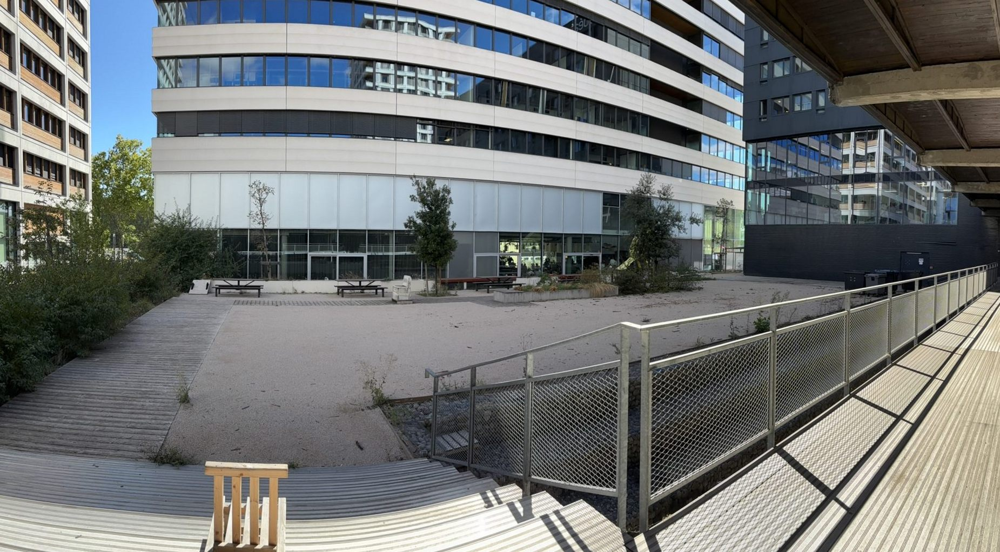

Le sujet
Aménager la cour du campus
Tout part d'une consigne donnée à la rentrée 2026, à Strate Lyon. Les étudiants ont été répartis en 40 groupes de 8 à 9 personnes, avec le même terrain, la cour du campus, et le même exercice de design d'espace : imaginer comment l'aménager, en tenant compte de son environnement et de ses contraintes.
Chaque groupe travaillait donc pour une maquette qui, si elle convainquait le staff de l'école, serait construite pour de vrai. Il fallait en rendre deux choses : la maquette elle-même, et une affiche A3 qui la représente. Le reste était laissé libre. Notre groupe y a ajouté un texte de présentation et une maquette d'intention, dont je reparle plus bas.
Ce projet compte pour moi parce que c'est une première : c'est la première fois que je mets la main sur les approches et les techniques du design, avec un exercice précis, construire une maquette pour raconter un projet.
